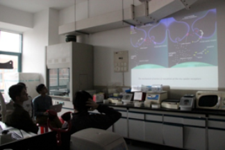
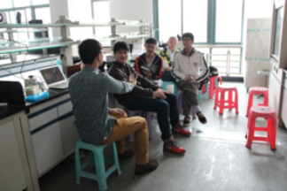

This is the third time that our university participates in IGEM competition. Through the experience, teachers and administrators find that IGEM can help students improve the interest of the synthetic biology. So they support three teams this year. Most of our team member are the first time to participate in IGEM competition and have no experience. So at the beginning, we hope to communicate with some experienced teams.
In early April 2015, the students form Nanjing University came to Guangzhou. We took the opportunity to organize the first meeting. We hoped to exchange the experience and share ideas. Three teams from our school, Team from Nanjing University and Sun Yat-sen University participated in the meeting. In the meeting we introduced the design and progress of our project. Besides, we also talked about the human practice and web design. The meeting went to the highlight when we shared the experience of overcoming difficulties in the project. Guangzhou’s food is very famous in China, after the meeting, we invited the students from Nanjing University and Sun Yat-sen University to taste the local food. Through the meeting we made friends with each other. We also found that there are many young people making efforts for the IGEM across China. When we accomplish the project and get the prize, I think we would be moved by ourselves.
Our team members go to Shanghai to communicate with the IGEM teams from Shanghai Jiao Tong University, New York University Shanghai, Tongji University. We shared the projects and appreciated the beauty of these universities.
In summary, through these meetings we shared the experience of IGEM including project design, wiki, human practice and so on. At the same time we gained friendship. The IGEM is a competition. We don’t regard each other as competitor, and we are friends. Thanks for the supports of our university, without its help we couldn’t have so much precious experience.
In recent years, with the increasing varieties and the widespread use, antibiotics has become one of the most commonly used drugs in China. Irrational use of antibiotics or even abuse is threatening human health. The food containing antibiotic residues, the intestinal flora in body will gradually have resistance to antibiotics, which will causes the poor effect when use the antibiotics. As students of biology major, we also hope to contribute to solving this problem relying on our own efforts. So when we have a chance to participate in IGEM competition, we choose to focus on the food safety, hoping to improve the food safety in China with our efforts. Finally, we determine to develop an effective and simple antibiotics detector, which will not only provide a new method for the detection mechanisms, but also will help the consumers detect their food easily. To a certain extent, it can ensure their food security.
At first, We set the goal to sold our product in the market. At the same time, through our promotion, it can also make more people focus on their food safety and know the important of rational use of antibiotics. In order to successfully achieve the goal, we find some venture capital firms to talk about cooperation, also participate in Innovation & Entrepreneurship Fair for College Students in Shenzhen. There are a lot of start-up companies in this fair, to our surprise, there are many life and health start-up companies. We exchange ideas and products at the fair and I think in the future there will be more technological companies in the field of life and health, they will provide better services for human health. In addition, many invest- ment firms participated in the fair. We communicate and exchange information with them, and some express the intention to cooperate.
Through this fair, I deeply felt that the life and health field is a focus of society. That strengthens our beliefs to struggle for human life and health.